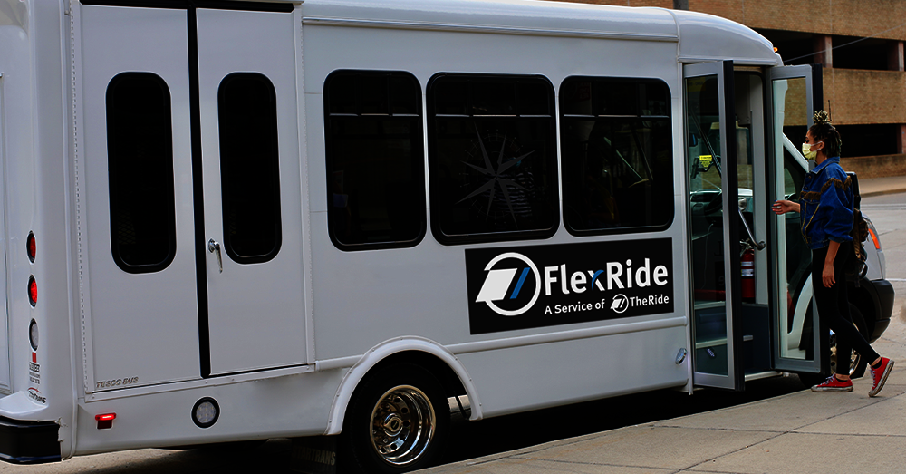
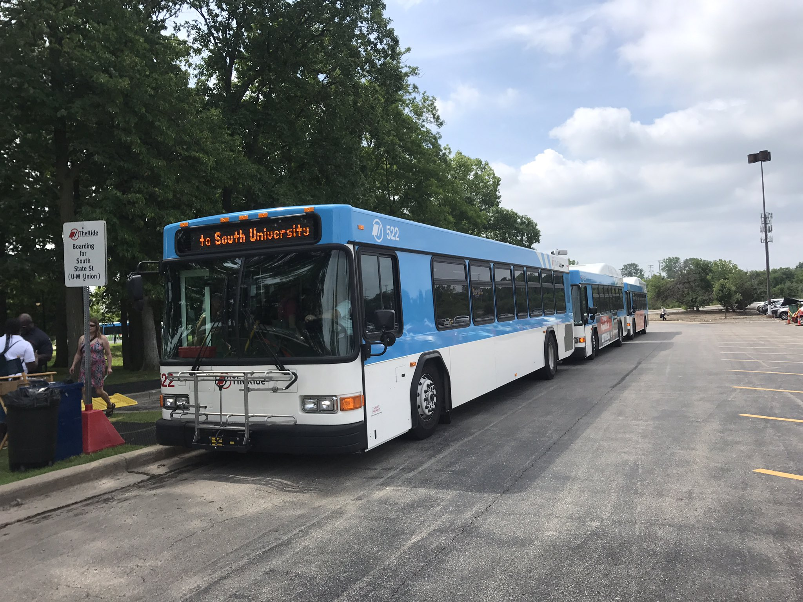
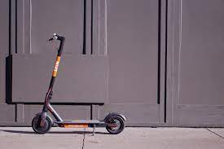

3 Commuting Around Campus and Ann Arbor
3.1 Walking
- As central campus and downtown Ann Arbor border each other, it is very easy to walk between these parts of the city
- Campus integrated with Ann Arbor streets for more organized travel
- On campus, there are safety posts (black posts with a bright blue light) along the streets allow you to get instant direct contact with security
- For an interactive map of campus and of Ann Arbor see https://maps.studentlife.umich.edu/
3.3 TheRide
- TheRide is Ann Arbor’s public bus system that provides cheap and easy to travel between cities within Michigan
- It is free for students with an MCard
- Their website features a “Plan My Trip” feature that allows you to enter a departure location and a destination and will tell you which bus route to take to get to your destination
- See their website https://www.theride.org/ for maps & schedules, fares & passes, and more information on how to ride

3.4 Cars/Parking
- Parking Passes: https://ltp.umich.edu/parking/permit-parking/
- 4 Tiers of passes available for faculty, students, and staff based on seniority: Gold, Blue, Yellow, Orange
- Graduate students are eligible for 4 types of parking permits with annual costs
- Yellow/After Hourmore infs – $237
- Student Storage – $234
- Orange – $84
- After Hours – $70
- Understanding Michigan Car Insurance
- Michigan is considered a “no-fault” which makes insurance rates in the state significantly higher than average
- Plate and License Transition
3.5 Spin Scooters
- Download the app on iOS or Android for a fun way to zip around campus
- Cost: $1 to unlock the scooter + 15¢ per minute to ride
- For more information: https://www.spin.app/
